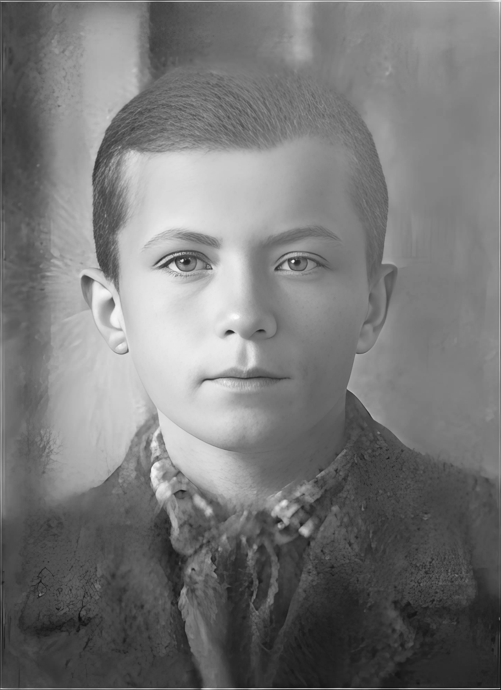
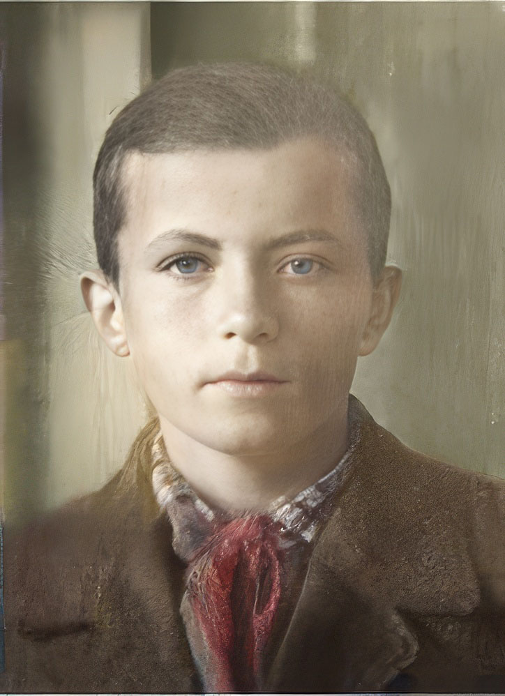
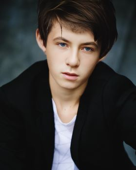

В 7 классеМне 13 лет   У каждого мужчины этот возраст особенный: мысли и чувства ежесекундно рождаются и набегают друг на друга. Свежи и неповторимы краски и ароматы бытия. Остро ощущается собственное Я. Это фото сделал Борис Алёхин из соседнего класса и на год старше меня. Я же улучшил и раскрасил фото летом 2021 года.
В 14 лет, в это цветущее время классные активисты вручили мне
устав ВЛКСМ и дали задание выучить сущность демократического
централизма, о котором меня спросят во время приёма в их ряды.
Я легко и хорошо учился. Родители не ставили задачу быть отличником и я произвольно определял степень успеваемости. На приёме в ВЛКСМ девочка из соседнего класса, член комитета, спросила меня как-то по особенному о том, как именно я понимаю сущность демократического централизма, хотя я ожидал, что меня попросят наизусть прочитать про этот централизм. И тут я, не привыкший к явному вниманию ко мне девочек, не знающий, что такое демократия и централизм, стушевался и не мог произнести ничего, тем более, что и не понимал эти слова. Тут же она спросила, а зачем я иду в комсомол? И я не смог сказать ничего особенного, так как шёл ТУДА, потому что все шли. В чём именно помогать в основном деле партии - строительстве коммунизма, я не знал, был далёк от партии и коммунизма.
Приговорили меня к изучению истории ВЛКСМ и к уяснению сущности
принципов ВЛКСМ. Это был шок, меня почти как контру из
какого-нибудь тогдашнего популярного фильма разоблачили и не
поставили к стенке, потому, что я глупый, но ещё смогу понять и
ответить как следует, если меня начнут воспитывать ранее
вступившие в ВЛКСМ мои одноклассники, которые меня обломают, как тогда
говорили. На следующий день я пересел на последнюю парту и стал смотреть на своих одноклассников, особенно на тех, кто вот-вот начнёт меня воспитывать. Они вроде и не очень лучше меня были, а вступали в комсомол друг за другом еженедельно и вскоре вступили все. Но они не приступали к моему воспитанию, а скромно решали задачи на собраниях единогласным поднятием рук.
 Однако школьнце задания не решить поднятием рук, а основы знаний были именными: теорема Пифагора, стихи Пушкина,картина Сурикова, музыка Пахмутовой и т.д.Позже мне стали понятны и противны решения "задач" поднятием рук большинства трудящихся, военных и служащих школ, больниц и учебных заведений. К родителям я не обращался, а бабушка ездила в церковь (в городе не было ни одного храма) и не могла мне объяснить демократический централизм. Через полгода я снизил свою успеваемость и отказался от предложения комсорга снова поступать в ВЛКСМ, так как мне никто ничего не разъяснил и ничего во мне не воспитал, забыли, не смотря на указание, которое получил комсорг нашего класса. Иногда я решал школьные задачки нарочно быстрее всех в классе: показывал, что я не дурак. Через год и я забыл, что не комсомолец и после восьмого класса ушёл из школы, сдав конкурсные экзамены в техникум. Там про комсомол во время приёма не поинтересовались и я был рад, так как экзамены сдал лучше многих, да ещё мне стали платить стипендию с первого месяца за хорошие показатели при сдаче экзаменов. Я опять вошёл в колею нормального человека, понимающего сущность вещей и явлений. Но как оказалось не на долго...
В конце первого курса техникума. Я стал сомневаться, туда ли я поступил учиться. Фото сгенерировано сервисом искусственного интеллекта в 2024 году. P.S. Позже и я решал задачи руками большинства для формальных единогласных решений всевозможных собраний строителей коммунизма, куда меня зачисляли добровольно принудительным способом. Какое же
влияние оказал демократический централизм на общественное сознание
в России, вероятно, выяснят позже. Мне же, этот метод принятия
решений без доказательств был чужд из-за явной бестолковости окружающих меня
приспособленцев. В биологии мозга и социальной психологии я не специалист, но наблюдаю возле себя массу живых снарядов с надёжно записанным пионерской, комсомольской и партийной пропагандой полётным заданием с целью победы коммунизма во всём мире. А раздельное образование в последующем и служба в мужских коллективах создали для меня условия, в которых я смог сосредоточиться на техническом, системном и абстрактном мышлении. Приложение: Произвольное мышление — это способность человека сознательно размышлять о вещах, не связанных напрямую с биологическими потребностями, и управлять своим вниманием и мыслями. Произвольное мышление — это способность сознательно анализировать, планировать и создавать абстрактные концепции, выходя за рамки непосредственных биологических нужд, таких как еда, размножение или доминантность. Оно требует усилий для переключения мозга с задач выживания на интеллектуальные задачи, что делает его энергозатратным и "неестественным" для человека как биологического существа. В отличие от произвольного, непроизвольное мышление протекает автоматически и часто не осознаётся. К нему относятся спонтанные мысли, навязчивые размышления и эмоциональные реакции на события. Произвольное мышление всегда целенаправленно и управляемо, например, при планировании действий, решении задач или выборе фильма для просмотра. Произвольное мышление связано с развитием лобных долей мозга, которые у человека значительно сложнее, чем у приматов. Эта структура обеспечивает пластичность сознания, способность анализировать ситуацию, предвидеть последствия и принимать решения, не продиктованные инстинктами. Человеческий мозг с раннего возраста формирует нейронные связи, позволяя трансформировать информацию в сложные мыслительные конструкции. Произвольное мышление является редким даром и критерием человечности, позволяя человеку создавать внутренние модели мира, заниматься саморазвитием и творчеством. Однако оно может приводить к социальной изоляции, так как общество часто не принимает тех, кто мыслит глубоко и абстрактно. Письменность, грамматика и математика являются производными речевых функций, но не заменяют произвольное мышление, которое выходит за рамки этих навыков. Произвольное мышление используется для планирования, решения сложных задач, научного и философского анализа, а также для саморазвития и творчества. Оно позволяет человеку создавать новые идеи и концепции, которые не имеют прямой биологической выгоды, но формируют культуру и цивилизацию. |